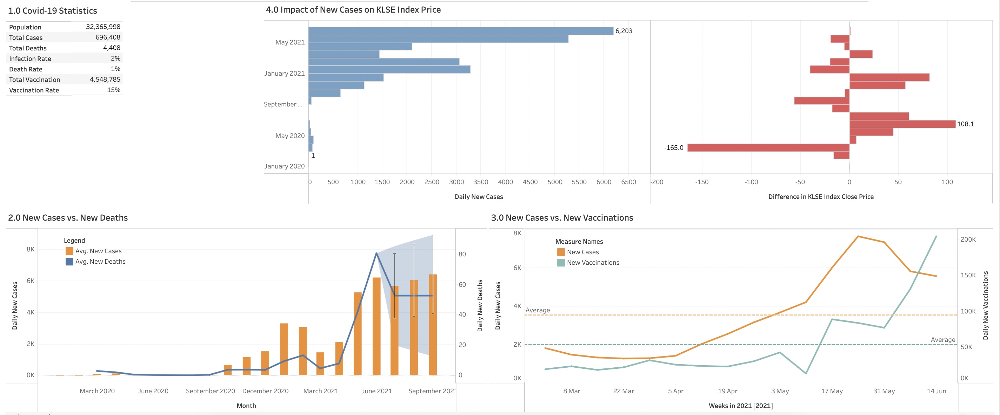

Alternance Data Scientist | IA & Big Data
Actuellement en Master en Intelligence Artificielle et Big Data, je suis passionné par l'analyse des données, le machine learning et l'IA.
Développement d’un modèle d’IA capable de reconnaître des gestes de la main à partir d’un flux vidéo en temps réel. Le système utilise une webcam pour capter les signes, les traite avec OpenCV et prédit le signe correspondant grâce à un modèle entraîné avec Keras/TensorFlow.
Détection et classification des maladies des plantes à partir d'images de feuilles.
Développement d’un modèle d’IA multimodal combinant vision et son pour détecter les intrusions en 13 secondes.
Analyse des données Covid-19 et de leur impact sur l'indice KLSE en Malaisie à l'aide de Microsoft SQL Server.
Développement d'un système AutoML pour prédire la gravité des accidents de la route en 2023 à partir de données réelles du Ministère de la Sécurité Routière.
Développement et optimisation de pipelines de traitement de données avec Python (Pandas, NumPy).
Implémentation de workflows ETL automatisés avec Apache Airflow pour le chargement des données dans PostgreSQL.
Conception de tableaux de bord interactifs sous Tableau pour la visualisation et l'analyse des tendances.
Développement d'une interface utilisateur intuitive et réactive avec Vue.js pour améliorer l'expérience utilisateur.
Création et intégration d'API RESTful sécurisées avec Python Flask et gestion des données via SQL.
Mise en place d’un environnement conteneurisé avec Docker, garantissant la portabilité et la scalabilité de l'application.
Nettoyage, transformation et stockage de données volumineuses avec PostgreSQL et Apache Airflow.
Développement et entraînement de modèles prédictifs de classification et de régression avec Scikit-learn.
Évaluation des performances des modèles avec des métriques avancées et visualisation des résultats avec Matplotlib.
Email: macaurellaourou@gmail.com
LinkedIn: Mac-Aurel LAOUROU
GitHub: Mac-Aurel